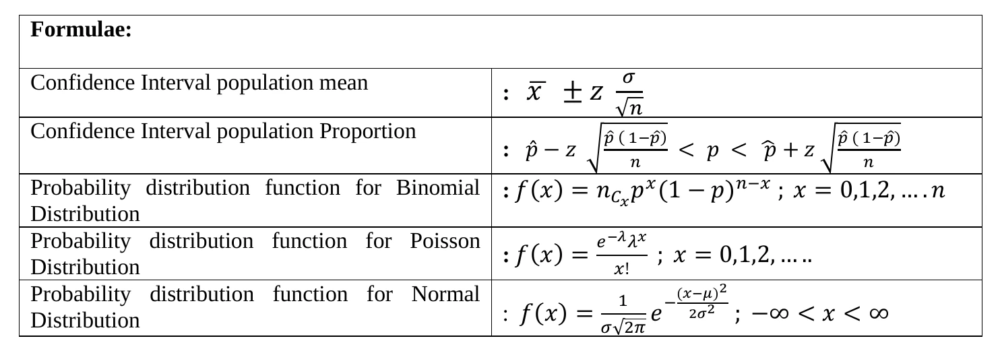
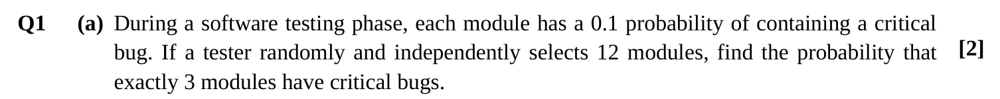
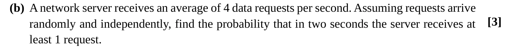
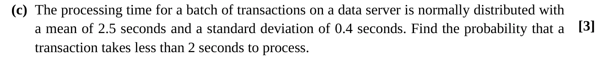
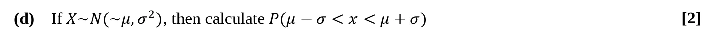
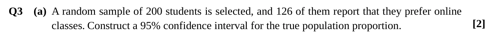
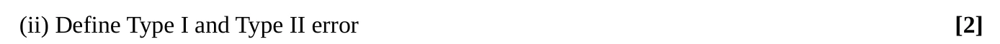
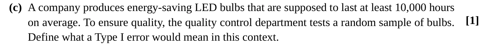
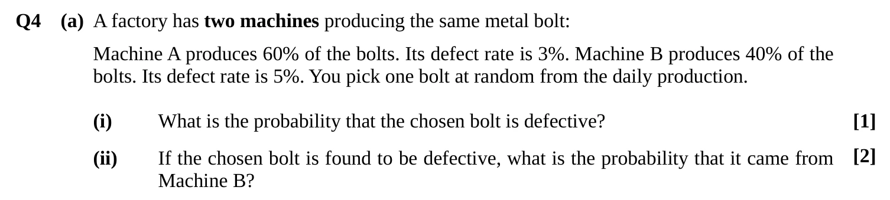

Final Exam, Summer 2025 — Solved
The Summer 2025 (trimester 252) MATH-2205 final: 40 marks, 2 hours, four questions of 10 marks each. Each question is shown exactly as it appears on the paper, with a full worked solution behind a dropdown. For real practice, sit it under timed conditions first, then check.
Every solution uses the class notation, and the hypothesis test follows the six steps from Unit 10. Also solved: the Fall 2025 final.
What the Exam Gives You
The paper prints only these formulas:

Not printed, but needed on this paper: \(Z = \frac{X - \mu}{\sigma}\), the test statistic \(z = \frac{\bar{x} - \mu_0}{\sigma/\sqrt{n}}\), the z-values (1.645, 1.96), Bayes' theorem, \(E(X)\) and \(\text{Var}(X)\), the independence test \(P(A \cap B) = P(A)P(B)\), the Type I / II definitions, and how to find \(k\), the cdf, the mean and the median of a pdf. They're all on the Final Cheat Sheet.
Question 1 — Binomial, Poisson & Normal [10]
Q1(a) — Binomial: Exactly 3 [2]

Show solution
A fixed number of modules (12), each buggy or not, with the same chance 0.1 — that's binomial. “Exactly 3” is one term of the formula.
Q1(b) — Poisson: At Least One [3]

Show solution
The rate is per second, but the question asks about two seconds, so double it first. “At least 1” is easiest as 1 minus “none”.
Q1(c) — Normal: Less Than 2 Seconds [3]

Show solution
Turn 2 seconds into a z-score, then read the area to its left. 2 is below the mean of 2.5, so expect a small probability.
\(X \sim N(2.5, 0.4^2)\):
\[z = \frac{2 - 2.5}{0.4} = -1.25\]Q1(d) — Within One Standard Deviation [2]

Show solution
Standardising turns \(\mu - \sigma\) into \(z = -1\) and \(\mu + \sigma\) into \(z = 1\), whatever \(\mu\) and \(\sigma\) are. So the answer is the same for every normal distribution.
This is the “68%” of the empirical rule. (The paper writes \(X \sim N(\sim\mu, \sigma^2)\) — the extra “~” is a typo for \(X \sim N(\mu, \sigma^2)\).)
≈ 0.6826 (about 68%)Question 2 — Continuous Random Variable [10]
Q2(a)–(e) — Backup Time
![Q2 The time (in minutes) taken by a computer to complete a data backup operation is modeled as a continuous random variable X with the probability density function f(x) = k(10 − x) for 0 ≤ x ≤ 10, and 0 otherwise. (a) Determine the value of k that makes f(x) a valid probability density function. [2] (b) Find the Cumulative Distribution Function (CDF) F(x). [2] (c) Find the probability that the backup takes less than 5 minutes. [2] (d) Compute the expected time for the backup to complete. [2] (e) Determine the median backup time. [2]](img/final252/q2.webp)
Show solution
The Unit 09 routine: area = 1 gives \(k\); integrating from 0 up to \(x\) gives the cdf; the cdf gives probabilities and the median; and \(\int x\,f(x)\,dx\) gives the mean.
For \(0 \leq x \leq 10\), \(10 - x \geq 0\), so \(f(x) \geq 0\) as long as \(k > 0\). Now set the total area to 1:
\[\int_0^{10} k(10 - x)\,dx = k\left[10x - \frac{x^2}{2}\right]_0^{10} = k(100 - 50) = 50k = 1 \quad\Longrightarrow\quad k = \frac{1}{50} = 0.02\]Check: \(F(0) = 0\) and \(F(10) = \frac{200 - 100}{100} = 1\). ✓
Here F(m) = 0.5 is the right method — that's the definition of the median:
\[\frac{20m - m^2}{100} = 0.5 \;\Longrightarrow\; m^2 - 20m + 50 = 0 \;\Longrightarrow\; m = \frac{20 \pm \sqrt{400 - 200}}{2} = 10 \pm \sqrt{50}\]\(10 + \sqrt{50} \approx 17.07\) is outside \(0 \leq x \leq 10\), so \(m = 10 - \sqrt{50} \approx 2.93\) minutes.
F(m) = 0.5 finds the median. The mode is where f is highest: this f slopes downward, so its mode is at \(x = 0\) — a different answer. Use \(f'(x) = 0\) (or check the endpoints) for the mode, and \(F(m) = 0.5\) for the median.
Question 3 — Estimation & Hypothesis Testing [10]
Q3(a) — Confidence Interval for a Proportion [2]

Show solution
Start from the sample proportion \(\hat{p} = x/n\), work out the margin of error \(c\), then step \(c\) down and up from \(\hat{p}\).
2.5% in each tail, so look up 97.5%: \(z_{97.5\%} = 1.96\).
Q3(b)(i) — One-tailed Test for a Mean [5]
![(b) (i) A company claims that the average typing speed of its data entry clerks is at least 60 words per minute (wpm) after training. A supervisor suspects that the training program has actually improved performance and wants to test whether the mean speed is greater than 60 wpm. A random sample of 40 clerks shows a mean typing speed of 62.3 wpm with a standard deviation of 4.8 wpm. At the 5% significance level, test whether the average speed has increased. [5]](img/final252/q3b1.webp)
Show solution
Assume the training did nothing (mean still 60 wpm). How unusual is a sample mean of 62.3 from 40 clerks? If it's rarer than 5%, the speed really has increased.
The supervisor wants to show the mean is greater than 60, so that goes in \(H_1\):
\[H_0: \mu = 60 \qquad H_1: \mu > 60\]\(\alpha = 0.05\), one-tailed (right).
\(n = 40\) is large, so the sample standard deviation 4.8 can stand in for \(\sigma\):
\[z = \frac{\bar{x} - \mu_0}{\sigma/\sqrt{n}} = \frac{62.3 - 60}{4.8/\sqrt{40}} = \frac{2.3}{0.7589} = 3.03\]Using the rejection region instead: right-tailed at 5%, reject if \(z > 1.645\). Here \(z = 3.03\), well inside it.
\(0.0012 < 0.05\), so there exists sufficient evidence to reject \(H_0\).
At the 5% level, there is sufficient evidence that the training has increased the average typing speed above 60 wpm.
z = 3.03 > 1.645, p = 0.0012 < 0.05 → reject H₀ · the average speed has increasedQ3(b)(ii) — Type I and Type II Errors [2]

Show solution
A test can go wrong in two ways: raising a false alarm, or missing something that's really there.
Rejecting \(H_0\) when \(H_0\) is actually true. Its probability is the significance level \(\alpha\).
Failing to reject \(H_0\) when \(H_0\) is actually false. Its probability is written \(\beta\).
Q3(c) — Type I Error in Context [1]

Show solution
First write down \(H_0\) — the bulbs meet the standard — then a Type I error is wrongly rejecting it.
Concluding that the bulbs last less than 10,000 hours on average when they actually do last at least 10,000 hours. A good batch of bulbs gets wrongly rejected as faulty.
Concluding the bulbs fall short of 10,000 hours when they actually meet it — a good batch is wrongly rejectedQuestion 4 — Probability & Discrete Distributions [10]
Q4(a) — Total Probability & Bayes [3]

Show solution
Draw the tree: pick a machine, then defective or not. (i) adds up every defective path. (ii) asks what fraction of those defective bolts came from Machine B.
Machine B makes only 40% of the bolts but over half the defective ones, because its defect rate is higher.
(i) P(defective) = 0.038 · (ii) P(B | defective) = 10/19 ≈ 0.526Q4(b) — Expected Value & Standard Deviation [4]
![(b) A delivery company gives drivers a daily performance bonus based on the number of successful deliveries made in a day. The number of deliveries completed varies due to traffic, weather, and demand. The company's data show the following probability distribution for the number of deliveries a driver completes in a day, and the corresponding bonus earned: deliveries 5, 6, 7, 8, 9 with probabilities 0.1, 0.2, 0.4, 0.2, 0.1 and bonus 200, 250, 300, 350, 400 Tk. (i) Find the expected number of deliveries a driver completes per day. [1] (ii) Find the standard deviation of the daily bonus (in Tk.) a driver earns. [3]](img/final252/q4b.webp)
Show solution
The mean is \(\sum x\,p(x)\). For the bonus, find its mean and the mean of its squares; the variance is the difference, and the standard deviation is the square root.
| Bonus \(y\) (Tk) | \(p\) | \(y\,p\) | \(y^2 p\) |
|---|---|---|---|
| 200 | 0.1 | 20 | 4,000 |
| 250 | 0.2 | 50 | 12,500 |
| 300 | 0.4 | 120 | 36,000 |
| 350 | 0.2 | 70 | 24,500 |
| 400 | 0.1 | 40 | 16,000 |
| Total | 1 | 300 | 93,000 |
Check: the bonus is \(Y = 50X - 50\), and \(\text{Var}(X) = 50.2 - 7^2 = 1.2\). So \(\text{SD}(Y) = 50\sqrt{1.2} = 54.77\). ✓
(i) E(X) = 7 deliveries · (ii) SD of the bonus = √3000 ≈ 54.77 TkQ4(c) — Testing Independence [3]
![(c) A survey was conducted among 200 university students to study the relationship between owning a laptop and subscribing to online learning platforms. Subscribe online: own a laptop 80, do not own 60, total 140. Do not subscribe: own 20, do not own 40, total 60. Totals: 100, 100, 200. A is the event that a student owns a laptop; B is the event that a student subscribes to online learning. (i) Find P(A) and P(B). (ii) Test whether events A and B are independent. [3]](img/final252/q4c.webp)
Show solution
Read the probabilities straight from the totals. A and B are independent only if \(P(A \cap B)\) equals \(P(A) \times P(B)\) exactly.
\(0.4 \neq 0.35\), so A and B are not independent.
In words: owning a laptop changes the chance of subscribing. \(P(B \mid A) = \frac{80}{100} = 0.8\), compared with \(P(B) = 0.7\) overall.
(i) P(A) = 0.5, P(B) = 0.7 · (ii) P(A ∩ B) = 0.4 ≠ 0.35 = P(A)P(B) → not independent